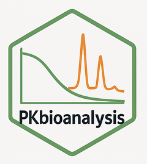

Manually Update Observed RT for either all compounds, all next samples, or single compound and sample
Source:R/peak_integerate.R
update_RT.RdUpdate RT for either all compounds, all next samples, or single compound and sample
Usage
update_RT(
chrom_res,
compound_id,
sample_id = NULL,
peak_start,
peak_end,
mode = "auto",
target = "single",
force = FALSE,
comment = "",
flag = FALSE
)Arguments
- chrom_res
ChromRes object
- compound_id
Compound ID
- sample_id
Sample ID (required for "single" and "all_next", must be NULL for "all")
- peak_start
Minimum RT value
- peak_end
Maximum RT value
- mode
Mode of update. Options are "auto", "manual", "ai". Default is "auto"
- target
Target of update. Options are "single", "all", "all_next". Default is "single"
- force
Force update if previous peak exists. Default is FALSE
- comment
Comment for the update. Default is an empty string
- flag
Flag the peak after update. Default is FALSE
Details
- target = "single": Updates RT for one compound and sample - target = "all": Updates expected RT for all samples (sets expected bounds) - target = "all_next": Updates RT for specified sample and subsequent samples
All modes affect both observed and expected RT values: - "manual": Sets exact peak bounds, marks as manual - "auto": Auto-detects peaks within bounds - "ai": AI-based peak detection